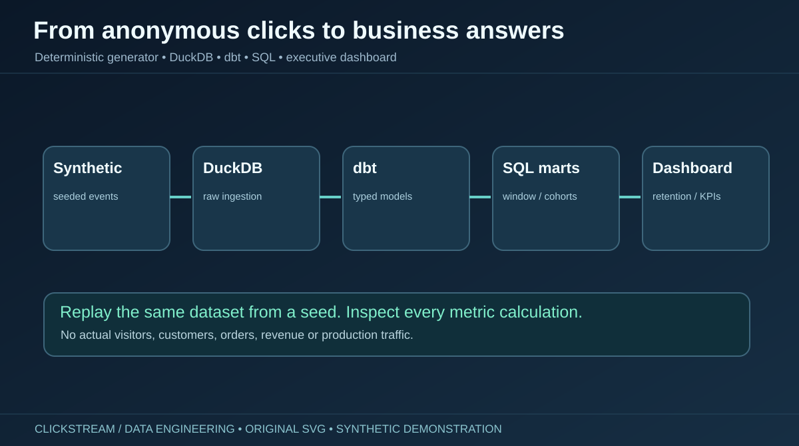
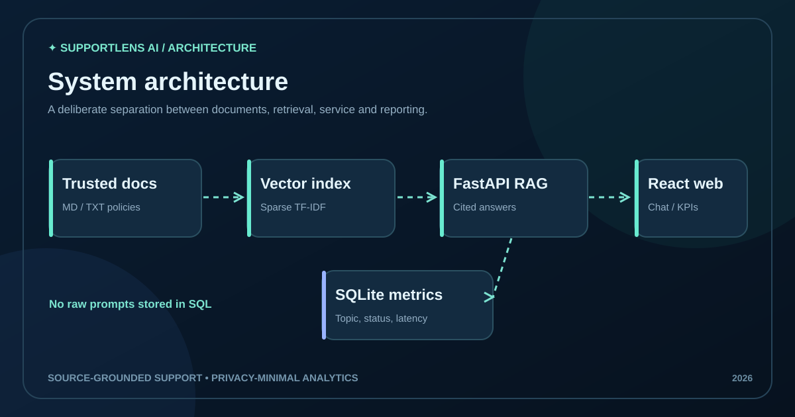

From raw prices to reproducible SQL evidence
Includes data contracts, validation counters, duplicate handling, rule-based sentiment, SQLite analytics, source-aware KPI definitions, ten visualization assets and passing GitHub Actions.
These are seven evidence-linked projects worth exploring in an interview. Each entry tells the problem, my documented contribution, the workflow, measured demo results, limitations and next steps. The complete GitHub collection remains available separately.

Time-aware random forest benchmarking, conservative recipient screening, capacity-aware reservation checks, 47 Python plus 3 PostgreSQL integration checks and a static browser-only demonstration. The public site is a portfolio, not a production food service.

Eight sample SKUs; chronological forecasting; model evaluation; reorder heuristics; and bounded pricing what-if simulations. The browser demo runs separately from the Python API.
A reproducible analytics warehouse and Streamlit dashboard for synthetic product pricing, simulated sales estimates and review sentiment. The default 1,440 product-day observations are fictional; no live retailer feed or sentiment accuracy claims.
Includes data contracts, validation counters, duplicate handling, rule-based sentiment, SQLite analytics, source-aware KPI definitions, ten visualization assets and passing GitHub Actions.
Filter by the work you want to evaluate. Project metrics are source-reported demo/dataset measurements, not independent business results.
7 case studies shown
Explainable PDF classification, extractive page-cited summaries, React UI, FastAPI and SQL operational analytics.
72 authored synthetic training examples · no real-world accuracy claim
A reproducible pipeline for cleaning, revenue recognition, retention cohorts and RFM segmentation.
Class-imbalance-aware fraud-risk scoring with FastAPI, SQL persistence and a React review interface.
Time-safe features, seasonal baseline comparison, LightGBM and a simulated inventory planning workflow.
A document question-answering app that provides source evidence and tracks retrieval/abstention behavior.
Restaurant KPIs, interactive cuisine/rating exploration and a documented dashboard workflow.
Source-aware air-quality data application, station trends, OpenAQ connector, visual pipelines and real historical Beijing benchmark.
Observed Beijing benchmark: persistence MAE 42.4398 vs Random Forest 42.6768 µg/m³; baseline wins · not live India
A reproducible, synthetic DuckDB/dbt analytical warehouse with conversion funnels, weekly cohort retention, acquisition performance, customer value, ten original visual diagrams and verified automated tests.

Explore five warehouse marts, six SQL investigations, Python generation, Streamlit visualization and data-quality contracts. No real customer or production-traffic claims.

Source-aware Python ingestion, overlapping chunks, sparse TF-IDF retrieval, FastAPI, React and SQLite analytics. Includes 10 original SVG diagrams, authored evaluation questions and continuous integration tests. Default mode is offline, with no real customer data.
Portfolio prototype, not a publicly deployed production support service.
A tested React and FastAPI demonstration of GTFS Schedule parsing, source-aware delay analysis, wheelchair boarding metadata, offline ML evaluation and feed-health monitoring.

Default network and delays are synthetic. The GitHub repository includes optional agency schedule and realtime prediction interfaces, but does not claim verified live ETAs or deployed backend service.
Beyond the six recruiter-first case studies, HealthPulse demonstrates a working FastAPI and React analytics application with historical public health data, explicit source separation, and reproducible data checks.
Five indicator categories, 18 represented countries, 2012–2024 requested. The verified 1,026-record snapshot includes a SHA-256 audit manifest. It is a historical public aggregate dataset—not a clinical prediction service or direct WHO API import.
Source-attributed WDI observations (published snapshot)
Python/FastAPI, React, SQLite, Docker, validation pipelines, historical trends and provenance. At last verification, 84 Python tests and a full-stack Docker smoke test passed.
I focus on source-backed implementation details, meaningful test boundaries, and honest statements of what a demo does not prove.
More about my background ↗My separate resumes focus on Data Analytics or AI/ML, and the recruiter page provides a concise overview with school and internship background.